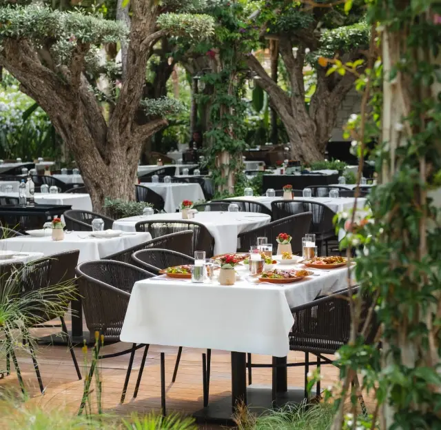

Restoranlar
56 mekân
Fotoğraf eklenecek
MITU Lokanta
Ege mutfağı
Şefin dünya mutfağı tabakları
9,6Mükemmel48 misafir puanı
Fotoğraf eklenecek
Defne Yaprağı Balık
Balık
9,4Mükemmel221 misafir puanı
Fotoğraf eklenecek
Deniz Pide Alaçatı
Pide
Kavurmalı pide · Kıymalı-kaşarlı pide · Kuşbaşılı pide
9,4Mükemmel1.824 misafir puanı
Fotoğraf eklenecek
Hürmüz Ocakbaşı Alaçatı
Ocakbaşı
Kuzu kaburga · Adana kebap · Humus
9,4Mükemmel1.876 misafir puanı
Fotoğraf eklenecek
Köşe Bahçe Kahvaltı
Kahvaltı
Türk kahvaltısı · Peynir ve reçel çeşitleri · Limonata
9,4Mükemmel417 misafir puanı
Fotoğraf eklenecek
Fava Alaçatı
Meze
Leblebi tatlısı · Fava tekmil · Ahtapot
9,3Mükemmel9.939 misafir puanı
Fotoğraf eklenecek
Varka Alaçatı
Deniz ürünleri
Balık · Balık köftesi · Mezeler
9,3Mükemmel422 misafir puanı
Fotoğraf eklenecek
Alaçatı Zeytin Tarla
Odun fırını pizza
Odun fırını pizza · Dört peynirli pizza · Sucuklu pizza
9,2Mükemmel187 misafir puanı
Fotoğraf eklenecek
Arven Alaçatı
Şarap & Akdeniz
Pizza bianco · Alaturka pizza · Küçük tabaklar
9,2Mükemmel196 misafir puanı
Fotoğraf eklenecek
Bumba Breakfast Club
Kahvaltı
Serpme kahvaltı · Menemen · Pancake
9,2Mükemmel2.205 misafir puanı
Fotoğraf eklenecek
Latife Çeşme Ocakbaşı
Ocakbaşı
Adana kebap · Ocakbaşı etler · Mezeler
9,2Mükemmel114 misafir puanı
Fotoğraf eklenecek
Ova Sofra
Tarladan sofraya
Ev usulü Türk mutfağı · Organik ürünler
9,2Mükemmel57 misafir puanı
Fotoğraf eklenecek
Papazz
Akdeniz
Mezeler · Akdeniz tabakları
9,2Mükemmel536 misafir puanı
Fotoğraf eklenecek
Ritüel
Çağdaş Ege
Çağdaş Türk mutfağı
9,2Mükemmel67 misafir puanı
Fotoğraf eklenecek
Terakki Alaçatı
Ege mutfağı
Humus · Paylaşmalık küçük tabaklar
9,2Mükemmel670 misafir puanı
Fotoğraf eklenecek
Çark Balık Çeşme
Balık & meze
Enginar · Ahtapot ızgara · Ahtapot güveç
9,1Mükemmel1.312 misafir puanı
Fotoğraf eklenecek
Sailors Alaçatı
Kahvaltı & pizza
Tiramisu · Avokadolu tost · Mantarlı bonfile
9,1Mükemmel857 misafir puanı
Fotoğraf eklenecek
Amavi Seafood & Cocktail
Deniz ürünleri
Deniz ürünleri · Kokteyller
9,0Mükemmel253 misafir puanı
Fotoğraf eklenecek
Bağ Bostan Alaçatı
Kahvaltı & brunch
9,0Mükemmel332 misafir puanı
Fotoğraf eklenecek
Zeytinaltı Kahvaltı
Kahvaltı
Serpme kahvaltı · Bahçe zeytinleri · Ev yapımı reçeller
9,0Mükemmel591 misafir puanı
Fotoğraf eklenecek
Fuente Çeşme Marina
Fransız-Akdeniz
Mürekkep balıklı siyah makarna · Deniz ürünleri · Tiramisu
8,9Harika1.199 misafir puanı
Fotoğraf eklenecek
İstakozcu Canbaba
Istakoz
Istakoz · Istakozlu spagetti · Çipura
8,9Harika869 misafir puanı
Fotoğraf eklenecek
Ahali Alaçatı
Çağdaş Ege
Çağdaş Ege tabakları
8,8Harika774 misafir puanı
Fotoğraf eklenecek
Dalyan Restaurant Cevat'ın Yeri
Balık
Balık · Levrek · Kalamar
8,8Harika1.478 misafir puanı
Fotoğraf eklenecek
Sota Alaçatı
Deniz ürünleri
Ahtapotlu el açması tagliatelle · İstiridye · Midye
8,7Harika792 misafir puanı
Fotoğraf eklenecek
byZevkliler
Akdeniz
8,6Harika218 misafir puanı
Fotoğraf eklenecek
Horasan Balık
Deniz ürünleri
Ahtapot · Karides (scampi) · Carpaccio
8,6Harika361 misafir puanı
Fotoğraf eklenecek
Kumrucu Hikmet
Kumru
Kumru sandviçi · Ayran
8,6Harika1.543 misafir puanı
Fotoğraf eklenecek
Mâzi Yıldızburnu
Deniz ürünleri
Deniz ürünleri
8,6Harika82 misafir puanı
Fotoğraf eklenecek
Ortaya Alaçatı
Akdeniz
Soğuk meze tabağı · Falafel · Sokum biftek
8,6Harika2.486 misafir puanı
Fotoğraf eklenecek
Pizzeria da Roberto
İtalyan
Napoli usulü pizza · Tagliatelle · Tiramisu
8,6Harika561 misafir puanı
Fotoğraf eklenecek
Roka Bahçe
Ege mutfağı
Ege mutfağı tadım tabakları · Mevsim sebzeleri
8,6Harika302 misafir puanı
Fotoğraf eklenecek
Salonis
Balık
Balık · Kabuklu deniz ürünleri (böcek)
8,6Harika134 misafir puanı
Fotoğraf eklenecek
Langusta
Istakoz
Langusta (ıstakoz) · Reyhanlı patlıcan · Fava
8,3Çok iyi396 misafir puanı
Fotoğraf eklenecek
Eflatun Alaçatı
Ege mutfağı
Mezeler · İç pilavlı levrek · Pappardelle
8,2Çok iyi545 misafir puanı
Fotoğraf eklenecek
Ferdi Baba Köyiçi
Balık
Balık · Deniz ürünleri · Mezeler
8,2Çok iyi663 misafir puanı
Fotoğraf eklenecek
Ferdi Baba Port Alaçatı
Balık & meze
Ahtapot · Balık · Mezeler
8,0Çok iyi2.509 misafir puanı
Fotoğraf eklenecek
İmren Lokantası
Ev yemekleri
Yöresel ev yemekleri · Deniz börülcesi · Mezeler
8,0Çok iyi1.425 misafir puanı
Fotoğraf eklenecek
Kasap Fuat Çeşme
Et restoranı
Imza et tabakları · Steak · Et çeşitleri
8,0Çok iyi121 misafir puanı
Fotoğraf eklenecek
Tarla Alaçatı
Tarladan sofraya
Tarla kahvaltısı · Akşam yemeği tabakları
8,0Çok iyi562 misafir puanı
Fotoğraf eklenecek
Veranda Alaçatı
Deniz ürünleri
Alaçatı meze sofrası · Deniz ürünleri
8,0Çok iyi1.623 misafir puanı
Fotoğraf eklenecek
Alliance Yıldızburnu
Akdeniz
Ahtapot ızgara · Mezeler
7,8İyi238 misafir puanı
Fotoğraf eklenecek
Fahri'nin Yeri
Balık
Rakı-balık · Mezeler · Uskumru
7,7İyi1.522 misafir puanı
Fotoğraf eklenecek
Kapari Bahçe
Akdeniz
Patlıcan paçanga · Otlu mücver · Keçi peynirli yaz salatası
7,2İyi1.716 misafir puanı
Fotoğraf eklenecek
Asma Yaprağı
Tarladan sofraya
Zeytinyağlılar · Mezeler · Dolma
7,1İyi2.812 misafir puanı
Fotoğraf eklenecek
Ali'nin Yeri Ildırı Balık
Balık
Levrek · Çipura · Kalamar
7,0İyi724 misafir puanı
Fotoğraf eklenecek
Cabbar Port
Ocakbaşı & kokteyl
Mezeler · Ocakbaşı
6,8Orta655 misafir puanı
Fotoğraf eklenecek
Agrilia at Buradan Vineyards
Akdeniz
Henüz puan yok
Fotoğraf eklenecek
Avlu Alaçatı
Üst düzey restoran
Henüz puan yok
Fotoğraf eklenecek
Babushka Alaçatı
Türk-Rus
Türk ve Rus mutfağı
Henüz puan yok
Fotoğraf eklenecek
Beyaz Balık
Balık
Henüz puan yok
Fotoğraf eklenecek
Ferdi Baba Şifne
Balık
Henüz puan yok
Fotoğraf eklenecek
Kalama
Ege mutfağı
Henüz puan yok
Fotoğraf eklenecek
Martı Alaçatı
Balık & rakı
Henüz puan yok

Meftun
Türk mutfağı
Henüz puan yok
Fotoğraf eklenecek
Yeni Yer
Odun ateşi
Henüz puan yok
Bu bölgede henüz mekân yokDiğer bölgeye göz atabilirsiniz.